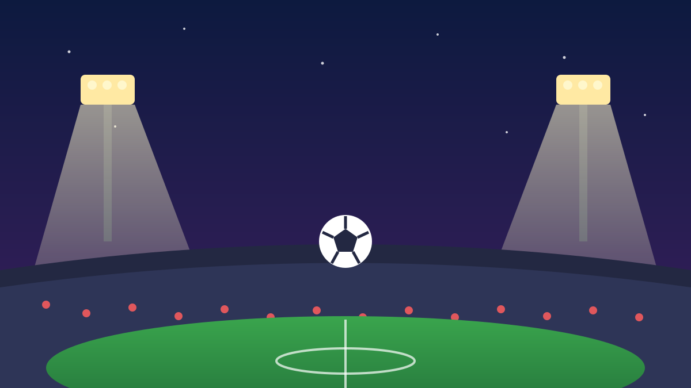

1 / 6

⚽ OLAHRAGA
Drama Red Flag, Guevara Juara Moto2 Mandalika!
Balapan sempat dihentikan, jarak dipangkas, eh pembalap Spanyol ini tetap menang meyakinkan. Geser buat spill lengkapnya →
2 / 6
🏁
Menang Telak 3,5 Detik
Izan Guevara (22), pembalap Spanyol dari tim BLU CRU Pramac Yamaha Moto2, finis pertama dengan waktu 21 menit 44,433 detik.
Manuel Gonzalez finis kedua (+3,570 detik) dan Daniel Holgado ketiga (+4,497 detik). Ini kemenangan ketiga beruntun Guevara musim ini — sebelumnya di Misano dan Motegi.
3 / 6
🚩
Balapan Sempat Kena Red Flag
Baru lap pembuka, empat pembalap jatuh di tikungan pertama: Daniel Holgado, David Alonso, Joe Roberts, dan Collin Veijer.
Bendera merah dikibarkan, balapan diulang, dan jarak dipangkas dari 22 lap jadi 14 lap. Untungnya keempat pembalap bisa berdiri kembali.
4 / 6
🔥
Plot Twist di Dua Lap Terakhir
Alex Escrig sempat memimpin balapan, tapi motornya bermasalah dua lap sebelum finis — Guevara langsung ambil alih dan nggak keuber lagi.
Yang paling plot twist: Holgado, si penyebab insiden red flag, malah bangkit dan naik podium ketiga. Redemption arc banget.
5 / 6
🏆
Perebutan Gelar Makin Panas
Manuel Gonzalez masih memimpin klasemen, tapi keunggulannya atas Guevara kini tinggal 5,5 poin. Penentuan juara dunia bakal berlanjut ke seri berikutnya.
Guevara sendiri musim depan naik kelas ke MotoGP bareng Prima Pramac Yamaha, berduet dengan Toprak Razgatlioglu. Sementara Mario Suryo Aji harus puas finis di luar zona poin di balapan kandangnya.
6 / 6
🤔
Efeknya ke lo apa?
Mandalika lagi-lagi buktiin Indonesia bisa gelar balapan kelas dunia tanpa drama gagal. Buat lo yang suka nonton balap, perebutan gelar Moto2 musim ini lagi seru-serunya — tiap seri berasa final.
Dan kalau ada rencana nonton langsung ke Lombok tahun depan, mulai nabung dari sekarang. Tiket + akomodasi pas race week auto naik, bestie.